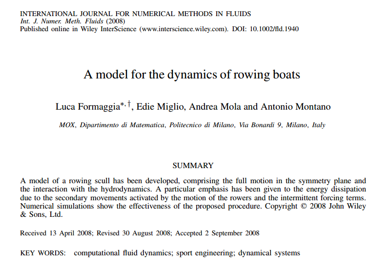

![]()

Homomorphic Encryption for Developers
From algebraic foundations and textbook RSA to practical BFV and dependable private computation
A competition rowing boat is not merely a hull acted upon by a prescribed propulsive force. It is an intermittently forced multiphysics system in which the athletes constitute moving internal masses, the oars transmit forces through constrained mechanical linkages, and the hull interacts with a deformable free surface. The observable motion emerges from the coupling of rigid-body dynamics, human kinematics, hydrostatics, viscous resistance, wave generation, and radiation damping.
This article reconstructs the mathematical architecture of a computational model developed for racing sculls. It explains how momentum balances for the hull, rowers, and oars reduce to a nonlinear system of ordinary differential equations; how a linearized radiation problem converts free-surface effects into added-mass and damping operators; and why geometric preprocessing, motion reconstruction, hydrodynamic calibration, and time integration are inseparable from the theoretical derivation.
The project was driven by practical engineering questions. We wanted to quantify the performance penalty produced by stroke-induced secondary motions, determine how crew mass, placement, cadence, and force history affected sinkage and trim, and provide a computational tool with which alternative hull and crew configurations could be compared before committing to expensive physical trials. The task was therefore not simply to solve a set of equations, but to decide which physical mechanisms had to be represented at each stage of design.
To answer those questions, we developed a hierarchy of models rather than a single solver. A stand-alone reduced simulator combined rigid-body dynamics, measured or prescribed rower motion, real hull geometry, empirical and CFD-calibrated resistance, and a potential-flow approximation of wave radiation. In parallel, a higher-fidelity route coupled the structural dynamics to a finite-volume RANS model with turbulence closure, a Volume-of-Fluid representation of the air–water interface, an ALE moving grid, and staggered fluid–structure exchange. The reduced route enabled repeated design studies; the coupled CFD route resolved the feedback between hull motion, free-surface deformation, pressure loads, and the subsequent motion of the boat.[^the-mathematics-behind-a-racing-shell-moxp3-report]
The analysis also examines the scientific reception of the work through verified examples of later publications that cited, extended, compared, or simplified the model. Citation counts are treated as evidence of scholarly uptake rather than proof of correctness. The stronger evidence of research depth lies in the explicit assumptions, conservation laws, scale separation, numerical architecture, falsifiable outputs, and acknowledgement of unresolved validation questions.
Computational tractability was obtained by assigning different questions to different model fidelities. The reduced model retained the mechanisms needed for rapid studies of hull design, crew arrangement, trim, and rowing style, whereas the coupled CFD formulation provided a more complete representation of nonlinear free-surface and fluid–structure effects. The resulting research was therefore neither a single empirical curve fit nor an attempt to replace every design calculation with full CFD. Its central modelling contribution was the construction of a physically consistent hierarchy in which high-fidelity calculations, reduced operators, experimental inputs, and engineering decisions could inform one another.
rowing dynamics, computational fluid dynamics, fluid-structure interaction, rigid-body mechanics, free-surface flow, added mass, radiation damping, reduced-order modelling, rowing, sculling, sweep rowing, rowing biomechanics, rowing technique, stroke cycle, rowing performance, sports engineering, athlete kinematics, oarlock forces, blade hydrodynamics, propulsive efficiency, stroke rate, drive phase, recovery phase, boat acceleration, hull resistance, wave resistance, rowing physiology, pacing strategy, race analysis, crew selection, rigging optimization, sports technology, performance modelling, fluid-structure coupling, RANS, volume of fluid, VOF, arbitrary Lagrangian-Eulerian, ALE, moving meshes, staggered coupling, engineering simulation, simulation software, Kimè, hull trim, crew positioning
A retrospective on the engineering and mathematical development of a multilevel model for racing-shell dynamics, from a stand-alone reduced simulator to coupled free-surface CFD.
The work described here grew out of a particular research environment. It was carried out at MOX — the Laboratory for Modeling and Scientific Computing of the Department of Mathematics at Politecnico di Milano. MOX had been established in 2002 to promote mathematical modelling and scientific computing in science and engineering, explicitly combining academic research with collaboration on problems arising from external partners.1 The rowing project was therefore closely aligned with the laboratory’s original purpose: start from a real engineering problem, identify the mechanisms that matter, construct a mathematical model, and turn that model into computational tools that can inform design decisions.
At the time this research programme began, MOX was led by its founder, Alfio Quarteroni, who was the Laboratory’s first head from 2002 to 2013 and later served again from 2018 to 2022.2 Quarteroni’s scientific career has been strongly associated with numerical analysis, mathematical modelling, scientific computing, and computational fluid dynamics. That background is relevant to the character of the work presented here: the objective was not mathematics in isolation, nor CFD used simply to produce detailed flow visualizations, but mathematical and computational modelling directed toward an engineering problem.
Just as importantly, the rowing programme was not developed inside the university without contact with the people designing and building racing shells. Its industrial counterpart was Filippi Lido S.r.l., the Italian racing-boat manufacturer. Contemporary and later sources document a collaboration between Filippi and Politecnico di Milano/MOX beginning in 2003. World Rowing reports that the collaboration involved software for studying the movement of athletes in Olympic rowing boats, the dynamics of the boat in the water, and methods for capturing athlete motion; it also records that these studies contributed to Filippi’s decisions concerning mould shape and the optimization of boats for different athletes.3
The relationship was therefore substantially more than access to a commercial hull. Publications produced during the research acknowledge Filippi’s technical support and, in particular, the continuous suggestions and encouragement of engineer Alessandro Placido; related work explicitly records financial as well as technical support from Filippi.4 A subsequent MOX study described the simulations as being performed within the partnership between the research group and Filippi Lido.5 Filippi’s own later R&D documentation makes the connection still more explicit: it describes KIME as software developed at the MOX Laboratory within a research project conducted collaboratively by Politecnico di Milano and Filippi Lido.6
This industrial input mattered scientifically. The questions to be answered were not invented merely because they produced interesting equations. They arose from the behaviour of real racing shells and from practical design choices: how athlete motion changed hull dynamics; how sinkage and trim affected resistance; how crew mass and longitudinal position influenced performance; how much energy was lost through motions that did not contribute to forward progression; and how numerical simulation could help distinguish promising configurations before manufacturing or testing them. The resulting research should therefore be read as an instance of industry-guided mathematical modelling: practical knowledge of boats and rowing helped define the questions, while mechanics, numerical analysis, CFD, experimental data, and software engineering were used to turn those questions into computable problems.
A racing shell appears mechanically elementary: an elongated hull, one or more athletes, and a set of oars. That visual simplicity is deceptive. From the modeller’s perspective, the boat is a rigid-body–fluid system driven by forces that are neither steady nor entirely external. The athletes accelerate a substantial fraction of the system’s mass relative to the hull; the blades enter and leave the water; the wetted surface changes as the boat heaves and pitches; and each stroke generates free-surface waves that remove energy from the mechanical system.
The research problem is therefore not simply to estimate drag at a prescribed speed. It is to determine the motion of the athlete–oar–hull assembly while the forces acting on that assembly depend on the motion being calculated.
That formulation arose from a concrete design problem. Conventional steady-resistance calculations could estimate the cost of moving a fixed hull at a prescribed velocity, but they could not determine the additional cost caused by the rowing stroke itself. During each stroke, the crew displaced a large internal mass, applied an intermittent force through the oars, changed the boat’s immersion and trim, and generated waves through surge, heave, and pitch. Those motions did not directly advance the boat, yet they consumed energy and changed the hydrodynamic resistance.
The practical objective was to turn these effects into quantities that a designer or coach could compare: mean and within-stroke velocity, sinkage, pitch, hydrodynamic force and moment, energy radiated by secondary waves, and sensitivity to crew mass, longitudinal position, cadence, and oarlock-force history. Existing rowing models were largely restricted to horizontal acceleration and treated secondary-wave losses empirically or ignored them. We therefore set out to construct a model that retained horizontal motion while adding heave, pitch, real-hull hydrostatics, replaceable rower and force laws, and several possible levels of hydrodynamic fidelity.7
This was also a software-development problem. The early stand-alone implementation, named Kimè, was designed so that rower trajectories, force histories, crew configurations, and hydrodynamic closures could be changed without rederiving the entire mechanical system. The same structural model could also be connected to a more expensive free-surface CFD solver when the assumptions of the reduced hydrodynamic model were considered insufficient.8
The model developed in A model for the dynamics of rowing boats represented the complete motion of a scull in its longitudinal symmetry plane. The three retained rigid-body degrees of freedom were horizontal translation, vertical translation, and pitch. Particular attention was given to the smaller oscillatory movements superimposed on the mean forward progression and to the energy radiated through the water by those movements.9

Let \mathbf X denote a spatial point, t time, and \mathbf V(\mathbf X,t) its absolute velocity. The basic kinematic decomposition is
\mathbf V(\mathbf X,t) = \overline{\mathbf V}(\mathbf X,t) + \mathbf u(\mathbf X,t), \tag{1}
where \overline{\mathbf V} is the slowly varying mean motion and \mathbf u is the stroke-induced secondary motion. The secondary component contains the within-stroke surge fluctuation, heave, and pitch. It is approximated as periodic with the rowing cadence.
Equation Equation 1 is a scale-separation assumption, not an identity supplied by nature. Its usefulness depends on whether the mean and oscillatory components can be modelled at different levels of fidelity without losing the mechanisms that materially affect performance.
The hull configuration is represented by
\mathbf q(t) = \begin{bmatrix} G_X^h(t)\\ G_Z^h(t)\\ \theta(t) \end{bmatrix}, \tag{2}
where G_X^h and G_Z^h are the horizontal and vertical coordinates of the hull centre of mass and \theta is the pitch angle. The superscript h distinguishes the hull centre from the centre of mass of the complete hull–crew system. That distinction is essential because the latter moves relative to the boat as the athletes slide and rotate their bodies.
At the highest level, the model has the form
\mathsf M \left( \mathbf q,\boldsymbol\xi,t \right) \ddot{\mathbf q} + \mathbf c \left( \mathbf q,\dot{\mathbf q}, \boldsymbol\xi,\dot{\boldsymbol\xi}, \ddot{\boldsymbol\xi},t \right) = \mathbf f_{\mathrm{oar}}(t) + \mathbf f_{\mathrm{hyd}} \left( \mathbf q,\dot{\mathbf q},t \right) + \mathbf f_g, \tag{3}
where \boldsymbol\xi(t) collects the prescribed internal kinematics of the rowers, \mathsf M is the effective inertia matrix, \mathbf c contains inertial and geometric coupling terms, \mathbf f_{\mathrm{oar}} is the generalized forcing transmitted through the oarlocks, \mathbf f_{\mathrm{hyd}} is the hydrodynamic reaction, and \mathbf f_g is gravity.
This compact equation conceals the real research effort. Every term must be derived, reconstructed from measurements, approximated from another physical model, or computed numerically.
The theoretical difficulty is to close Equation 3 without violating mechanics. Forces measured at the oarlocks must be related to reactions at the athletes’ hands, seats, and foot stretchers. Body segments move in a rotating and accelerating frame fixed to the hull, so their accelerations contain translational, tangential, centripetal, and Coriolis terms. Hydrodynamic forces depend on the instantaneous immersion, while wave radiation introduces frequency-dependent inertia and dissipation.
The engineering difficulty is complementary. A derivation alone does not produce a useful simulator. The hull geometry must be reconstructed and discretized; motion-capture trajectories must be converted into smooth functions that can be differentiated twice; force profiles must be synchronized with the drive and recovery phases; stationary flow calculations must be reduced to reusable resistance coefficients; and the assembled equations must remain stable under repeated time integration.
A fully resolved unsteady Reynolds-averaged Navier–Stokes computation could represent more flow physics, but its cost would make large design or crew studies impractical. The objective was therefore not simply maximum fidelity. It was a controlled reduction that remained physically interpretable and fast enough for preliminary design. The original study reports computations taking minutes rather than the several hours required by the more complete approaches considered by the authors.10
The subsequent literature shows that this formulation entered the scientific discussion in several distinct ways. More informative than a point-in-time citation count is the form of reuse: later work extended the model to additional rigid-body degrees of freedom, compared it with independent multibody formulations, and used the reduced dynamics for sensitivity and uncertainty studies.
The stronger basis for calling the work serious research is structural. It transformed a familiar sporting gesture into an auditable hierarchy of conservation laws, kinematic inputs, hydrodynamic approximations, numerical operators, and falsifiable outputs. The remainder of this article reconstructs that hierarchy.
The mechanical problem contains three interacting subsystems:
The main modelling challenge is that the forces at the hands, seats, foot stretchers, and oarlocks are largely internal to the combined system. They must not be counted twice, and their action–reaction signs must remain consistent when the subsystem equations are combined.
Let \mathbf G^h(t) be the inertial position of the hull centre of mass. A point whose coordinates in the hull frame are \mathbf x has inertial position
\mathbf X = \mathbf G^h + \mathbf Q(\theta)\mathbf x,
with
\mathbf Q(\theta) = \begin{bmatrix} \cos\theta & 0 & \sin\theta\\ 0 & 1 & 0\\ -\sin\theta & 0 & \cos\theta \end{bmatrix}. \tag{4}
The matrix \mathbf Q maps hull-fixed components into the inertial frame. Define the planar skew operator \mathbf J by
\mathbf J\mathbf a = \mathbf e_Y\times\mathbf a,
where \mathbf e_Y is perpendicular to the longitudinal symmetry plane. For \mathbf a=(a_x,0,a_z)^\mathsf T,
\mathbf J\mathbf a = (a_z,0,-a_x)^\mathsf T, \qquad \mathbf J^2\mathbf a=-\mathbf a.
Suppose \mathbf x_{ij}(t) is the hull-frame position of body segment i of rower j. Its inertial position is
\mathbf X_{ij}(t) = \mathbf G^h(t) + \mathbf Q(\theta(t))\mathbf x_{ij}(t). \tag{5}
Differentiating twice gives
\ddot{\mathbf X}_{ij} = \ddot{\mathbf G}^h + \mathbf Q \left[ \ddot{\mathbf x}_{ij} + 2\dot\theta\,\mathbf J\dot{\mathbf x}_{ij} + \ddot\theta\,\mathbf J\mathbf x_{ij} - \dot\theta^{\,2}\mathbf x_{ij} \right]. \tag{6}
The terms inside the brackets are, respectively, relative acceleration, Coriolis acceleration, tangential acceleration, and centripetal acceleration. Omitting them would amount to treating the hull-fixed frame as inertial, which is inconsistent when heave and pitch are explicitly resolved.
The original implementation divided each athlete into twelve anatomical masses. Motion-capture data were converted into analytic periodic trajectories for the relevant segment centres, providing \mathbf x_{ij}, \dot{\mathbf x}_{ij}, and \ddot{\mathbf x}_{ij} throughout the stroke.11
This conversion is an engineering necessity. Numerical differentiation of noisy marker positions would amplify measurement error, especially in the accelerations that enter Equation 6.
Let \mathbf F_{oj} be the force transmitted to the hull at the oarlock associated with rower j, and let \mathbf F_{hj} be the force applied at the rower’s hands. In the original reduction, the oar is rigid, massless, and in instantaneous static equilibrium.
Let L be the blade-to-hand lever distance and r_h the inboard distance between the oarlock and the hands. Moment balance gives
\mathbf F_{hj} = - \frac{L-r_h}{L}\mathbf F_{oj}. \tag{7}
The negative sign denotes opposing reactions. This is not a complete blade–water model: it omits shaft elasticity, oar inertia, blade slip, ventilation, and unsteady vortex dynamics. Its purpose is narrower. It provides a mechanically consistent force path between the water, oar, athlete, and hull.
When the rower, seat, and foot-stretcher balances are combined with the hull balance, the internal support reactions cancel. The resulting translational equation can be written
M \left( \ddot{\mathbf G}^h-\mathbf g \right) = \frac{r_h}{L} \sum_{j=1}^{n}\mathbf F_{oj} - \sum_{j=1}^{n} \sum_{i=1}^{p} m_{ij} \left( \ddot{\mathbf X}_{ij}-\mathbf g \right) + \mathbf F_w, \tag{8}
where M is the hull mass, m_{ij} is a body-segment mass, p is the number of segments per rower, n is the crew size, \mathbf g is gravity, and \mathbf F_w is the force exerted by the water.
The factor r_h/L is not an empirical propulsive efficiency. It arises from elimination of the internal force path. Part of the oarlock reaction is returned through the hands and the athlete’s contact with the hull; only the mechanically consistent resultant remains in the combined equation.
The coupling is most transparent through the kinetic energy. Define
M_r = \sum_{j=1}^{n} \sum_{i=1}^{p}m_{ij}, \qquad M_t=M+M_r,
\mathbf c(t) = \sum_{j=1}^{n} \sum_{i=1}^{p} m_{ij}\mathbf x_{ij}(t), \qquad J_r(t) = \sum_{j=1}^{n} \sum_{i=1}^{p} m_{ij} \left\lVert \mathbf x_{ij}(t) \right\rVert^2.
Here M_r is total rower mass, M_t total hull–crew mass, \mathbf c the first mass moment of the athletes relative to the hull centre, and J_r their instantaneous second mass moment.
Let
\mathbf a(\theta,t) = \mathbf Q(\theta)\mathbf J\mathbf c(t).
The inertia matrix associated with the generalized accelerations (\ddot G_X^h,\ddot G_Z^h,\ddot\theta) is
\mathsf M_{\mathrm{mech}}(\theta,t) = \begin{bmatrix} M_t & 0 & a_X\\ 0 & M_t & a_Z\\ a_X & a_Z & I_{YY}+J_r \end{bmatrix}, \tag{9}
where I_{YY} is the hull pitch moment of inertia.
The off-diagonal terms mean that translation and pitch are inertially coupled. An angular acceleration can produce a translational reaction because the athletes’ collective centre of mass does not generally coincide with the hull centre. Conversely, a hull acceleration produces a pitch moment when the moving crew mass is offset.
The symmetry of Equation 9 is a consequence of the kinetic energy. It is also a useful diagnostic: a nonsymmetric inertia matrix would indicate inconsistent coordinates or an omitted reaction term.
The matrix is positive definite. Its translational block is positive because M_t>0. Its Schur complement is
S = I_{YY} + J_r - \frac{\lVert\mathbf c\rVert^2}{M_t}.
The Cauchy–Schwarz inequality gives
\lVert\mathbf c\rVert^2 \leq M_rJ_r.
Therefore,
S \geq I_{YY} + J_r \left( 1-\frac{M_r}{M_t} \right) = I_{YY} + \frac{M}{M_t}J_r > 0. \tag{10}
Thus, before fluid added mass is introduced, the instantaneous acceleration problem possesses a physically admissible kinetic-energy metric.
After the known rower trajectories and their derivatives are moved to the right-hand side, the mechanical system has the form
\mathsf M_{\mathrm{mech}}(\theta,t) \ddot{\mathbf q} = \mathbf f_{\mathrm{oar}}(t) + \mathbf f_{\mathrm{kin}} \left( \theta,\dot\theta, \boldsymbol\xi,\dot{\boldsymbol\xi}, \ddot{\boldsymbol\xi} \right) + \mathbf f_g + \mathbf f_w, \tag{11}
where \mathbf f_{\mathrm{kin}} contains the inertial forcing generated by prescribed crew motion.
This equation explains a familiar but easily misunderstood observation: the shell accelerates during recovery even though the blades are out of the water. The athletes are moving internal mass, and conservation of momentum requires an opposite response by the hull.
If external forces are temporarily ignored, the total linear momentum is
\mathbf P = M_t\dot{\mathbf G}^h + \mathbf Q \left( \dot{\mathbf c} + \dot\theta\,\mathbf J\mathbf c \right).
Constant \mathbf P implies
\dot{\mathbf G}^h = \frac{1}{M_t} \left[ \mathbf P - \mathbf Q \left( \dot{\mathbf c} + \dot\theta\,\mathbf J\mathbf c \right) \right]. \tag{12}
Equation Equation 12 isolates the inertial contribution of rowing technique. Different recovery motions can change the within-stroke hull velocity even when mean oarlock force and cadence remain unchanged.
The mechanical model is therefore already nonlinear and explicitly time-dependent before the water is introduced. The rowers are not a fixed payload, and the oars are not a prescribed thrust vector. The crew changes the instantaneous inertia, produces inertial forcing in a non-inertial frame, and transmits blade forces through a constrained linkage.
The water performs three mechanically distinct functions. It supports the boat hydrostatically, resists the mean forward motion, and reacts dynamically to periodic surge, heave, and pitch. The third contribution cannot be represented faithfully by a single drag coefficient.
The hydrodynamic generalized force is decomposed as
\mathbf f_w = \mathbf f_{\mathrm{mean}} + \mathbf f_{\mathrm{rad}}, \tag{13}
where \mathbf f_{\mathrm{mean}} contains hydrostatics and mean resistance, while \mathbf f_{\mathrm{rad}} represents the response to secondary motion.
When a hull oscillates, part of the fluid reaction is in phase with acceleration. The body behaves as if its mass or moment of inertia had increased because surrounding water must also be accelerated. This is added mass.
Another part is in phase opposition to velocity. It represents mechanical energy transported away by outgoing waves. This is radiation damping.
For a constant symmetric added-mass matrix \mathbf M_a and generalized secondary velocity \mathbf v,
\mathbf f_a = -\mathbf M_a\dot{\mathbf v}.
Over a periodic cycle of duration T,
\int_0^T \mathbf f_a^\mathsf T\mathbf v\,dt = -\frac{1}{2} \left[ \mathbf v^\mathsf T \mathbf M_a \mathbf v \right]_0^T = 0.
Added mass stores and returns kinetic energy. By contrast, for
\mathbf f_d = -\mathbf S_r\mathbf v,
the work is
\int_0^T \mathbf f_d^\mathsf T\mathbf v\,dt = - \int_0^T \mathbf v^\mathsf T \mathbf S_r \mathbf v\,dt \leq0 \tag{14}
when the radiation-damping matrix \mathbf S_r is positive semidefinite. The inequality expresses passivity: an unforced radiation problem cannot create net mechanical energy.
Let L_s be the shell length, \lambda a characteristic wavelength of the secondary wave field, and A its amplitude. The reduction assumes approximately
\lambda\gtrsim L_s, \qquad A\ll L_s. \tag{15}
The waves are long enough to interact with the full hull but small enough for the free-surface conditions to be linearized about the undisturbed level.
The secondary flow is assumed incompressible and irrotational. If \Phi(\mathbf X,t) is its velocity potential,
\mathbf u_f=\nabla\Phi, \qquad \Delta\Phi=0 \quad\text{in the fluid domain}.
Let
\mathbf v(t) = \begin{bmatrix} \dot G_X^s(t)\\ \dot G_Z^s(t)\\ \dot\theta^s(t) \end{bmatrix}
be the generalized velocity of the secondary surge, heave, and pitch motion. At a hull point \mathbf r=(x,0,z)^\mathsf T with unit normal \mathbf n=(n_X,0,n_Z)^\mathsf T, define the generalized normal
\mathbf N = \begin{bmatrix} n_X\\ n_Z\\ z n_X-x n_Z \end{bmatrix}. \tag{16}
The normal hull velocity is
\mathbf u_h\cdot\mathbf n = \mathbf N^\mathsf T\mathbf v.
The same vector \mathbf N also converts pressure into the generalized force consisting of horizontal force, vertical force, and pitch moment.
For one harmonic of angular frequency \omega,
v_s(t) = \operatorname{Re} \left\{ \alpha_s e^{-i\omega t} \right\}, \qquad \Phi(\mathbf X,t) = \operatorname{Re} \left\{ \sum_{s=1}^{3} \alpha_s \phi_s(\mathbf X;\omega) e^{-i\omega t} \right\},
where \alpha_s is a complex velocity amplitude and \phi_s is the radiation potential generated by unit velocity in mode s.
Let \Gamma_b^0 be the mean wetted hull, \Gamma_0 the undisturbed free surface, and \Gamma_H an impermeable bottom at depth H. Each potential satisfies
\begin{aligned} \Delta\phi_s &=0 &&\text{in }\Omega,\\ \frac{\partial\phi_s}{\partial Z} &=0 &&\text{on }\Gamma_H,\\ \frac{\partial\phi_s}{\partial Z} -\frac{\omega^2}{g}\phi_s &=0 &&\text{on }\Gamma_0,\\ \frac{\partial\phi_s}{\partial n} &=N_s &&\text{on }\Gamma_b^0. \end{aligned} \tag{17}
The free-surface condition combines the linearized kinematic and Bernoulli conditions. The exterior problem also requires an outgoing-wave condition,
r^{1/2} \left( \frac{\partial\phi_s}{\partial r} - i\kappa\phi_s \right) \longrightarrow0 \qquad \text{as }r\longrightarrow\infty, \tag{18}
where r is horizontal radial distance and \kappa is the gravity-wave number. For finite depth,
\omega^2 = g\kappa\tanh(\kappa H).
The radiation condition distinguishes waves travelling away from the boat from waves arriving from infinity. It is therefore not a peripheral numerical detail. It determines the physically relevant solution and the direction of energy transport.
On a truncated computational domain, the exact exterior operator may be approximated by a first-order condition such as
\frac{\partial\phi_s}{\partial n} = i\kappa\phi_s
on a sufficiently distant artificial boundary.
The linearized dynamic pressure is
p_d = -\rho \frac{\partial\Phi}{\partial t},
where \rho is water density. The corresponding generalized force is
\mathbf f_{\mathrm{rad}} = -\rho \int_{\Gamma_b^0} \frac{\partial\Phi}{\partial t} \mathbf N\,d\Gamma.
For force component t generated by radiation mode s, define
M_{a,ts}(\omega) = \rho \int_{\Gamma_b^0} \operatorname{Re} \left[ \phi_s(\mathbf X;\omega) \right] N_t\,d\Gamma,
S_{r,ts}(\omega) = \rho\omega \int_{\Gamma_b^0} \operatorname{Im} \left[ \phi_s(\mathbf X;\omega) \right] N_t\,d\Gamma. \tag{19}
The resulting force is
\mathbf f_{\mathrm{rad}}(t) = -\mathbf M_a(\omega)\dot{\mathbf v}(t) - \mathbf S_r(\omega)\mathbf v(t). \tag{20}
For a complex velocity amplitude \widehat{\mathbf v},
\widehat{\mathbf f}_{\mathrm{rad}} = - \left[ \mathbf S_r(\omega) - i\omega\mathbf M_a(\omega) \right] \widehat{\mathbf v}.
The matrix
\mathbf Z_h(\omega) = \mathbf S_r(\omega) - i\omega\mathbf M_a(\omega) \tag{21}
is the hydrodynamic impedance. Its real part is dissipative; its imaginary part is reactive.
The published model reports the energy dissipated by secondary motions over one stroke period as
E_d = \frac{1}{2} \int_{t_0}^{t_0+T} \mathbf y^\mathsf T(t) \widetilde{\mathbf S}_r \mathbf y(t)\,dt. \tag{22}
The factor 1/2 is retained here because it is the convention used in the published calculation from which the reported dissipation values were obtained.12 If instead \mathbf f_{\mathrm{rad}}=-\mathbf S_r\mathbf v is interpreted directly as an instantaneous damping force acting on real velocities, its mechanical work over an interval is
E_{\mathrm{rad}} = \int_{t_0}^{t_1} \mathbf v^\mathsf T(t) \mathbf S_r \mathbf v(t)\,dt. \tag{23}
The two expressions should therefore not be interchanged when reproducing numerical values from the original publication: the first records the convention actually used there, while the second states the direct real-time work associated with the damping operator.
For a single complex harmonic amplitude, the corresponding mean power is
\overline P_{\mathrm{rad}} = \frac{1}{2} \widehat{\mathbf v}^{\,*} \mathbf S_r(\omega) \widehat{\mathbf v}, \tag{24}
where * denotes conjugate transpose. The factor 1/2 belongs to the complex-amplitude convention; it does not appear when instantaneous real velocities are integrated directly.
Reciprocity implies
\mathbf M_a^\mathsf T=\mathbf M_a, \qquad \mathbf S_r^\mathsf T=\mathbf S_r.
Passivity gives
\mathbf S_r\succeq0.
The original article described the computed matrices as positive definite. The more general result is positive semidefiniteness; strict positivity additionally requires that no nonzero combination of the retained modes be non-radiating.
Added mass augments rather than replaces the mechanical inertia. The effective acceleration matrix is
\mathsf M_{\mathrm{eff}} = \mathsf M_{\mathrm{mech}} + \mathbf M_a. \tag{25}
This distinction is fundamental. The crew changes the physical mass distribution; the fluid adds reactive inertia around that already time-dependent mechanical system.
The radiation problem contains \omega explicitly in both the free-surface and far-field conditions. Consequently, \mathbf M_a and \mathbf S_r depend on frequency as well as geometry. They may be computed offline for a selected cadence, but a substantial cadence change generally requires recomputation or interpolation over a frequency grid.
A periodic stroke contains harmonics,
\mathbf v(t) = \sum_{m=-\infty}^{\infty} \widehat{\mathbf v}_m e^{-im\omega_0t},
where \omega_0=2\pi/T is the fundamental frequency. Linear radiation theory acts separately on each harmonic:
\widehat{\mathbf f}_{\mathrm{rad},m} = - \left[ \mathbf S_r(m\omega_0) - im\omega_0\mathbf M_a(m\omega_0) \right] \widehat{\mathbf v}_m. \tag{26}
The original implementation retained the fundamental mode because it was found to account for most of the secondary-motion dissipation in the studied cases.13 This is a spectral truncation, not a claim that the stroke itself is perfectly sinusoidal.
For arbitrary motion, the frequency-dependent force can be represented in the time domain as
\mathbf f_{\mathrm{rad}}(t) = -\mathbf M_\infty\ddot{\mathbf q}^{\,s}(t) - \int_0^t \mathbf K(t-\tau) \dot{\mathbf q}^{\,s}(\tau)\,d\tau, \tag{27}
where \mathbf M_\infty is the infinite-frequency added mass and \mathbf K is a retardation kernel. The convolution expresses hydrodynamic memory: waves generated earlier continue to influence the present pressure field.
The reduction from an unbounded free-surface problem to two 3\times3 matrices is therefore substantial. It is also controlled. The assumptions, boundary conditions, signs, dimensions, symmetry, passivity, and frequency range can all be inspected independently.
A mathematical model becomes an engineering tool only when every symbolic quantity has been connected to geometry, measured or reconstructed data, numerical algorithms, and a decision that the calculation is intended to support. In this project, the principal modelling decision was not to choose one universally “best” solver. It was to build a hierarchy in which computational cost increased only when the engineering question required additional physical fidelity.
We needed two capabilities that pulled in opposite directions. For preliminary studies, crew comparisons, and repeated parameter sweeps, the simulation had to run rapidly and accept changes in rower mass, position, cadence, force history, and hull configuration. For detailed hydrodynamic investigation, it had to resolve the moving free surface and the feedback between fluid pressure and boat motion. We therefore developed two complementary routes.14
The first was the reduced route represented in Figure 2. Its stand-alone implementation combined the mechanical model with dynamically evaluated hydrostatics, reduced resistance laws, and potential-flow radiation operators. Expensive geometry- and frequency-dependent calculations were performed offline, while the repeated online calculation advanced only a small nonlinear dynamical system.
The second was a higher-fidelity fluid–structure route in which the same boat dynamics exchanged motion and loads with a finite-volume free-surface CFD solver. This route was more expensive, but it relaxed several assumptions embedded in the reduced radiation model and made the interaction between pressure, free-surface deformation, hull attitude, and moving-grid kinematics explicit.
%%{init: {"theme": "neo", "look": "handDrawn", "layout": "elk"}}%%
flowchart TD
subgraph OFF[Offline preparation]
A[Hull geometry<br/>surface + fittings] --> B[Geometric preprocessing<br/>normals + areas + projections]
C[Motion-capture records<br/>anthropometric model] --> D[Analytic periodic trajectories<br/>position + velocity + acceleration]
A --> E[Stationary RANS calculations<br/>selected speeds + attitudes]
E --> F[Resistance coefficients<br/>calibrated database]
A --> G[Boundary-element radiation solves<br/>surge + heave + pitch]
G --> H[Hydrodynamic matrices<br/>added mass + damping]
end
subgraph ON[Online simulation]
I[Scenario parameters<br/>crew + cadence + force + position]
B --> J[Current immersion<br/>hydrostatic quadrature]
D --> K[Mechanical inertia<br/>kinematic forcing]
F --> L[Mean resistance]
H --> M[Radiation reaction]
I --> J
I --> K
I --> L
I --> M
J --> N[Assemble nonlinear<br/>six-state system]
K --> N
L --> N
M --> N
N --> O[Adaptive Runge–Kutta<br/>time integration]
O --> P[Surge + heave + pitch<br/>speed + energy histories]
end
subgraph LEG[Legend]
L1[Geometry or measured inputs]
L2[Offline reduced operators]
L3[Online scenario inputs]
L4[Online physical evaluations]
L5[System assembly and solver]
L6[Simulation outputs]
end
classDef geom fill:#dbeafe,stroke:#1d4ed8,color:#111827,stroke-width:1.5px;
classDef offlineop fill:#ede9fe,stroke:#7c3aed,color:#111827,stroke-width:1.5px;
classDef scenario fill:#fef3c7,stroke:#d97706,color:#111827,stroke-width:1.5px;
classDef onlineeval fill:#dcfce7,stroke:#16a34a,color:#111827,stroke-width:1.5px;
classDef solver fill:#fde2e4,stroke:#e11d48,color:#111827,stroke-width:1.5px;
classDef output fill:#e0f2fe,stroke:#0891b2,color:#111827,stroke-width:1.5px;
classDef legendbox fill:#f3f4f6,stroke:#6b7280,color:#111827,stroke-width:1px;
class A,C geom;
class B,D,F,H offlineop;
class I scenario;
class E,G,J,K,L,M onlineeval;
class N,O solver;
class P output;
class L1 geom;
class L2 offlineop;
class L3 scenario;
class L4 onlineeval;
class L5 solver;
class L6 output;
style OFF fill:#f8fafc,stroke:#94a3b8,stroke-width:1.5px;
style ON fill:#f8fafc,stroke:#94a3b8,stroke-width:1.5px;
style LEG fill:#f9fafb,stroke:#9ca3af,stroke-width:1.5px;
Figure 2 shows why the method is not a monolithic CFD simulation. Different mechanisms are assigned different computational fidelities and update rates.
The reduced model was not the only fluid-dynamic formulation developed during the project. When a more complete description was required, the water and air were represented by Reynolds-averaged Navier–Stokes equations discretized with a finite-volume method. A k–\varepsilon closure supplied the turbulence variables, while a Volume-of-Fluid field identified the evolving air–water interface. The grid motion was treated in an Arbitrary Lagrangian–Eulerian framework so that the computational domain could follow the hull’s heave and pitch.15
Let
\mathbf W = \begin{bmatrix} u & v & w & p & k & \varepsilon & c \end{bmatrix}^{\mathsf T}
denote the fluid state, where u, v, and w are the velocity components, p is pressure, k and \varepsilon are turbulence variables, and c is the Volume-of-Fluid fraction. Let \mathbf y denote the boat state and let \mathbf x(\mathbf y) describe the moving grid. The coupled problem can be summarized schematically as
\frac{d}{dt} \left[ \mathcal S(\mathbf x)\mathbf W \right] + \mathcal F_c \left( \mathbf W, \mathbf x(\mathbf y), \dot{\mathbf x}(\mathbf y) \right) = \mathcal R(\mathbf W), \qquad \mathsf A(\mathbf y,t)\dot{\mathbf y} = \mathcal F_s \left( \mathbf f_{\mathrm{ext}}(\mathbf W) \right). \tag{28}
Here \mathcal S represents the finite-volume geometry, \mathcal F_c the ALE transport operator, \mathcal R the stress, turbulence, and source terms, and \mathbf f_{\mathrm{ext}}(\mathbf W) the hydrodynamic loads extracted from the fluid solution. The first equation depends on the hull motion through the moving mesh; the second depends on the fluid through drag, vertical force, and pitch moment. Neither subsystem can therefore be solved once and regarded as an independent input to the other.
We implemented this interaction through a staggered coupling strategy. The fluid solver received the current hull position, boundary conditions, body forces, and grid motion, and returned velocity and pressure fields. Post-processing converted the pressure and stress distributions into longitudinal force, vertical force, and pitch moment. The structural solver then computed the boat accelerations and updated its motion for the next fluid step. Heave and pitch were communicated through displacement and velocity of the moving grid, while longitudinal motion was introduced through the corresponding acceleration treatment.16
This distinction is important when assessing the work as modelling rather than equation manipulation. The task was to define the interface between two independently complex numerical systems: which quantities each solver required, which quantities it returned, how their coordinate systems and signs were reconciled, how the grid followed the structure, and in which order loads and motions were exchanged. The CFD calculation was not performed merely to produce a visualization of the wake. Its practical purpose was to compute the pressure field and free-surface response that generated the boat loads, then feed those loads back into the dynamics that changed the next fluid configuration.
Let \Gamma_h^0 be the hull surface in body coordinates. For a point \mathbf x=(x,y,z)^\mathsf T, its inertial vertical coordinate is
Z(\mathbf x,t) = G_Z^h(t) - x\sin\theta(t) + z\cos\theta(t).
If the undisturbed water level is h_0, define the local immersion depth
d \left( \mathbf x; G_Z^h,\theta \right) = \max \left[ 0,\, h_0-G_Z^h+x\sin\theta-z\cos\theta \right]. \tag{29}
The positive part ensures that dry points contribute no pressure. If \mathbf n(\mathbf x) is the outward hull normal in body coordinates, the hydrostatic force is
\mathbf S_h(t) = -\rho g \int_{\Gamma_h^0} d \left( \mathbf x; G_Z^h(t),\theta(t) \right) \mathbf Q(\theta(t)) \mathbf n(\mathbf x) \,d\Gamma. \tag{30}
An analogous moment integral provides the restoring pitch moment. These calculations must remain in the online loop because heave and pitch continually change the submerged part of the hull.
For a triangular surface mesh with triangle areas A_k, normals \mathbf n_k, and vertices \mathbf x_{k,i}, a nodal quadrature is
\mathbf S_h(t) \approx -\frac{\rho g}{3} \sum_{k=1}^{N_\triangle} A_k \mathbf Q(\theta)\mathbf n_k \sum_{i=1}^{3} d \left( \mathbf x_{k,i}; G_Z^h,\theta \right). \tag{31}
When a complete planar triangle is submerged, the untruncated pressure depth is affine and the vertex rule is exact. When the waterline cuts an element, the positive-part operation makes the integrand piecewise affine and introduces a localized geometric error. Mesh resolution near the waterline is therefore important even though the hydrostatic equation itself is elementary.
Geometric preprocessing must establish consistent units, watertight connectivity, outward normals, nondegenerate elements, and sufficient resolution in regions of high curvature. A defect in the surface representation propagates into buoyancy, trim moments, wetted area, projected areas, and resistance.
The mean longitudinal resistance is decomposed into shape, viscous, and wave-making components:
R = R_{\mathrm{shape}} + R_{\mathrm{vis}} + R_{\mathrm{wave}}.
A reduced representation is
R = \frac{\rho V_X^2}{2} \left[ C_{dX}A_X + C_f(\mathrm{Re})A_w + C_{dw}A_Z \right], \tag{32}
where V_X is forward speed, A_X is the wetted-surface projection normal to the longitudinal axis, A_Z is the horizontal projection, A_w is wetted area, and C_{dX}, C_f, and C_{dw} are shape, friction, and mean wave-resistance coefficients.
The Reynolds number is
\mathrm{Re} = \frac{V_XL_s}{\nu_w},
where \nu_w is the kinematic viscosity of water. The friction coefficient uses the correlation-line form
C_f(\mathrm{Re}) = \frac{0.075} {\left[ \log_{10}(\mathrm{Re})-2 \right]^2}.
The coefficients were obtained from standard formulae and selected stationary RANS calculations performed on the actual hull geometry.17 Those calculations do not disappear from the reduced model: their assumptions and numerical errors are compressed into the calibrated coefficients.
A reproducible calibration may be written abstractly as
\boldsymbol\beta_D^\star = \operatorname*{arg\,min}_{\boldsymbol\beta_D} \sum_{\ell=1}^{N_R} w_\ell \left[ R_{\mathrm{red}} \left( V_\ell,\zeta_\ell,\theta_\ell; \boldsymbol\beta_D \right) - R_{\mathrm{RANS},\ell} \right]^2, \tag{33}
where \zeta_\ell is sinkage, \theta_\ell is trim, w_\ell is a weighting factor, and \boldsymbol\beta_D contains the reduced-law parameters.
Equation Equation 33 is a transparent formulation of the implied fitting task, not a claim that this exact objective was documented in the original implementation. The publication does not report enough detail about the RANS meshes, turbulence closure, convergence tolerances, or fitting algorithm to reproduce that part of the pipeline exactly.
Only the potential on the boundaries is needed to construct the added-mass and damping matrices. The radiation problem was therefore solved with a boundary element method using the free-space Green function and curved quadrilateral elements with eight nodes.18
For the three-dimensional Laplace operator,
G(\mathbf P,\mathbf Q) = \frac{1} {4\pi \lVert \mathbf P-\mathbf Q \rVert}
is the fundamental solution. A boundary-integral equation has the form
c(\mathbf P)\phi_s(\mathbf P) + \int_\Gamma \phi_s(\mathbf Q) \frac{\partial G(\mathbf P,\mathbf Q)} {\partial n_{\mathbf Q}} \,d\Gamma_{\mathbf Q} = \int_\Gamma G(\mathbf P,\mathbf Q) \frac{\partial\phi_s} {\partial n_{\mathbf Q}} \,d\Gamma_{\mathbf Q}. \tag{34}
After interpolation and collocation,
\mathbf H\boldsymbol\phi_s = \mathbf G_b\boldsymbol q_s,
where \boldsymbol\phi_s contains nodal potentials and \boldsymbol q_s nodal normal derivatives. The free-surface, hull, bottom, and artificial-boundary conditions can be assembled as
\boldsymbol q_s = \mathbf R_\omega\boldsymbol\phi_s + \boldsymbol b_s,
leading to
\left( \mathbf H-\mathbf G_b\mathbf R_\omega \right) \boldsymbol\phi_s = \mathbf G_b\boldsymbol b_s. \tag{35}
At fixed geometry and frequency, the left-hand matrix is the same for surge, heave, and pitch; only the right-hand side changes. Its factorization can therefore be reused for all three modes.
A conventional dense boundary element implementation requires approximately O(N_B^2) storage and assembly for N_B unknowns, while a direct dense factorization requires O(N_B^3) arithmetic. These are generic complexity estimates rather than measured timings for the original code. They explain why radiation coefficients are calculated offline and reduced to 3\times3 matrices before the repeated simulations begin.
Define
\mathbf y(t) = \begin{bmatrix} \dot G_X^h& \dot G_Z^h& \dot\theta& G_X^h& G_Z^h& \theta \end{bmatrix}^{\mathsf T}. \tag{36}
Without radiation corrections, the first-order system is
\mathbf A(t,\mathbf y) \dot{\mathbf y} = \mathbf B(t,\mathbf y).
Extend the added-mass and damping matrices to six dimensions:
\widetilde{\mathbf M}_a = \begin{bmatrix} \mathbf M_a&\mathbf0\\ \mathbf0&\mathbf0 \end{bmatrix}, \qquad \widetilde{\mathbf S}_r = \begin{bmatrix} \mathbf S_r&\mathbf0\\ \mathbf0&\mathbf0 \end{bmatrix}.
The complete online problem becomes
\left[ \mathbf A(t,\mathbf y) + \widetilde{\mathbf M}_a \right] \dot{\mathbf y} = \mathbf B(t,\mathbf y) - \widetilde{\mathbf S}_r\mathbf y. \tag{37}
Only the velocity block is modified because added mass and damping act on generalized accelerations and velocities, not directly on positions.
At each function evaluation requested by the ODE solver, the program must:
The original program used an explicit adaptive Runge–Kutta method from the GNU Scientific Library.19 The matrix in Equation 37 should be solved rather than explicitly inverted, both for efficiency and numerical stability.
Adaptive stepping is valuable because the forcing varies strongly across the drive and recovery phases. It does not eliminate the need for smooth input functions. Discontinuous or insufficiently differentiable force profiles can cause repeated step rejection or inaccurate integration near the catch and finish.
Several checks can be made without comparing the simulator to a physical boat.
At static equilibrium,
S_{h,Z} = M_tg, \qquad M_h=0,
where S_{h,Z} is vertical hydrostatic force and M_h the hydrostatic pitch moment. Failure indicates a problem with mass data, normal orientation, water level, coordinate transformations, or quadrature.
Hydrodynamic reciprocity can be monitored using
\varepsilon_M = \frac{ \left\lVert \mathbf M_a-\mathbf M_a^\mathsf T \right\rVert_F }{ \left\lVert \mathbf M_a \right\rVert_F }, \qquad \varepsilon_S = \frac{ \left\lVert \mathbf S_r-\mathbf S_r^\mathsf T \right\rVert_F }{ \left\lVert \mathbf S_r \right\rVert_F }, \tag{38}
where \lVert\cdot\rVert_F is the Frobenius norm. These residuals should decrease under refinement.
Passivity requires that the minimum eigenvalue of the symmetric damping part,
\lambda_{\min} \left[ \frac{ \mathbf S_r+\mathbf S_r^\mathsf T }{2} \right],
not be materially negative. Large negative values would indicate an error in signs, normals, boundary treatment, or integration.
The online radiated energy in Equation 23 must remain nonnegative. The calculation should also be repeated with refined surface meshes, smaller ODE tolerances, frozen rower motion, zero oarlock force, and zero damping. These controlled limits test implementation consistency; they do not by themselves validate the physical model.
The model’s speed follows directly from this architecture. If N_s crew or design configurations are studied, a full approach has the approximate cost
C_{\mathrm{full}} \approx N_s C_{\mathrm{unsteady\ CFD}},
while the reduced workflow has
C_{\mathrm{reduced}} \approx C_{\mathrm{stationary\ CFD}} + C_{\mathrm{radiation}} + N_sC_{\mathrm{ODE}}.
The simulator was organized around engineering questions rather than around one preferred numerical method.
| Engineering question | Computed quantity | Intended practical use |
|---|---|---|
| How much useful energy was lost through secondary motion? | Radiation-damping work, heave and pitch amplitudes, within-stroke surge variation | Identify whether hull or rowing changes could reduce non-propulsive motion |
| How did crew mass and longitudinal position alter the boat? | Static and dynamic sinkage, trim, wetted area, resistance, and mean speed | Compare crew placement, loading, and trimming alternatives |
| How did cadence, force history, and athlete motion affect performance? | Mean speed, acceleration waveform, pitch, heave, and hydrodynamic loads | Compare stroke patterns and crew configurations |
| When was additional hydrodynamic fidelity warranted? | Comparison, where available, with higher-fidelity coupled calculations and assessment of reduced-model assumptions | Select the least expensive model consistent with the engineering question |
| Which data had to be supplied or measured? | Hull geometry, anthropometry, segment trajectories, oarlock forces, and operating conditions | Separate uncertain inputs from numerical and model-form errors |
The central output was therefore not a single “best” velocity curve. It was a reusable mapping from design and rowing inputs to forces, motions, energy losses, and performance indicators. The reduced model provided that mapping at a cost suitable for repeated studies; the coupled CFD model provided a higher-fidelity modelling alternative when nonlinear free-surface and fluid–structure effects became important.
When C_{\mathrm{ODE}} is much smaller than the fluid calculations, the preprocessing cost is amortized across the study. This is what makes systematic comparisons of crew mass, placement, force, and cadence possible.
A direct continuation generalized the mechanics from symmetry-plane motion to all six rigid-body degrees of freedom and introduced a control law to represent the balancing actions of the crew.20 This extension was nontrivial because a narrow shell is unstable in roll and does not possess a useful passive restoring mechanism in yaw.
Serveto, Barré, Kobus, and Mariot cited the paper while developing an independent multibody model in ADAMS and LifeMOD. Their representation used nineteen body segments and eighteen joints and reported agreement between calculated boat velocity and on-water measurements in the tested setting.21 This is evidence of methodological relevance from a different modelling tradition, not merely continuation by the original authors.
The reduced dynamics were subsequently used with non-intrusive polynomial chaos methods to investigate sensitivity to rower force, mass, and cadence.22 This use is particularly revealing: the model’s low online cost enabled uncertainty and parameter studies that would have been difficult with a full unsteady flow solver.
Karmanov and Chernousko cited the work while constructing a deliberately simpler rowing model with periodic oar motion and quadratic resistance.23 Wychowanski and collaborators likewise cited it in a one-dimensional analysis of single-sculling technique.24 These publications place the model at the detailed end of a spectrum ranging from analytically tractable longitudinal descriptions to coupled rigid-body and free-surface simulation.
The article also appears in later rowing-physiology research on pacing strategy.25 That is weaker evidence of direct methodological influence, but it shows that the work entered an interdisciplinary literature beyond computational fluid dynamics.
| Citation role | Representative later use | What it establishes |
|---|---|---|
| Direct extension | Six-degree-of-freedom dynamics with active balance control | The mechanical architecture could support a broader rigid-body formulation |
| Independent comparison | ADAMS/LifeMOD boat–oars–rower model | Another research group treated the paper as relevant prior art |
| Sensitivity analysis | Polynomial-chaos study of force, mass, and cadence | The reduced runtime enabled systematic parameter exploration |
| Deliberate simplification | Elementary and one-dimensional rowing models | Later authors used the work to delimit what their simpler assumptions omitted |
| Contextual citation | Experimental work on pacing physiology | The publication circulated beyond its original modelling community |
Table 2 demonstrates why citation context is more informative than citation quantity. It does not establish predictive accuracy. That requires experimental validation.
The article compared a simulated horizontal-velocity history with measurements from a single scull at 20 strokes per minute. The calculated signal reproduced the main qualitative oscillation, but discrepancies appeared near the beginning of each stroke. Crucial inputs—including athlete characteristics, oarlock force, and exact boat configuration—were not available and had to be reconstructed from plausible values.26
This supports qualitative agreement under uncertain inputs. It does not constitute a controlled quantitative validation.
Given synchronized measured velocities V_k and predictions \widehat V_k, one useful normalized error is
\varepsilon_2 = \left[ \frac{ \sum_{k=1}^{N} \left( \widehat V_k-V_k \right)^2 }{ \sum_{k=1}^{N} \left( V_k-\overline V \right)^2 } \right]^{1/2}, \tag{39}
where \overline V is the measured mean and the denominator is assumed nonzero.
A separate mean-speed bias is
b_{\overline V} = \frac{ \overline{\widehat V} - \overline V }{ \overline V }.
Phase error may be estimated by the lag that maximizes cross-correlation:
\Delta t_\phi = \operatorname*{arg\,max}_{\tau} \int \left[ \widehat V(t+\tau) - \overline{\widehat V} \right] \left[ V(t)-\overline V \right] dt.
These metrics distinguish mean progression, oscillation amplitude, and stroke timing. A model can predict the correct average speed while producing the wrong within-stroke phase, or reproduce a visually plausible waveform while retaining a systematic speed bias.
The original calculations estimated that secondary-motion dissipation could reach approximately ten per cent of total modelled dissipation in the investigated configurations.27 If
E_{\mathrm{tot}} = E_{\mathrm{mean}} + E_{\mathrm{sec}},
then the reported quantity is
\eta_{\mathrm{sec}} = \frac{ E_{\mathrm{sec}} }{ E_{\mathrm{tot}} } \lesssim0.10
for those simulations. It is not a universal ten-per-cent law. The value depends on geometry, cadence, crew motion, and the frequency-dependent damping matrix.
Two additional examples demonstrated engineering use rather than validation. Under equal peak oarlock force of 1200\,\mathrm{N} and equal cadence of 39.5 strokes per minute, the simulated 106\,\mathrm{kg} rower produced greater sinkage, stronger heave, and lower speed than the 80\,\mathrm{kg} rower. In a quad-scull positioning study, moving the crew 0.10\,\mathrm{m} aft was predicted to produce advantages of approximately two and four metres relative to the other tested arrangements over a 2000\,\mathrm{m} race.28
These results are internally consistent with the model. Greater mass increases displacement and wetted area; longitudinal placement changes trim and hydrodynamic loading. They remain simulation findings until controlled measurements confirm the predicted magnitudes.
A residual between measurement and simulation contains several error sources. Let \boldsymbol\mu collect measured operating inputs, \boldsymbol\vartheta uncertain model parameters, \mathcal S_h the numerical solver at discretization scale h, and \mathcal H the observation operator that maps the simulated state to what an instrument measures:
\widehat{\mathbf d} = \mathcal H \left[ \mathcal S_h \left( \boldsymbol\mu, \boldsymbol\vartheta \right) \right].
For data \mathbf d, define
\mathbf e = \mathbf d-\widehat{\mathbf d}.
To first order,
\mathbf e \approx \mathbf e_{\mathrm{meas}} + \mathbf e_{\mathrm{input}} + \mathbf e_{\mathrm{num}} + \mathbf e_{\mathrm{model}}, \tag{40}
where the terms represent measurement error, uncertain inputs, numerical error, and model-form discrepancy.
The measured-versus-computed velocity comparison could not separate these contributions because several important inputs were reconstructed. A mismatch near the catch might arise from the force profile, athlete kinematics, idealized blade model, mean resistance, radiation approximation, or measurement uncertainty.
Numerical error should be assessed first. If Q_h, Q_{h/r}, and Q_{h/r^2} are values of an output on three successively refined discretizations, an observed order is
p_{\mathrm{obs}} = \frac{ \ln \left| \dfrac{ Q_h-Q_{h/r} }{ Q_{h/r}-Q_{h/r^2} } \right| }{ \ln r }. \tag{41}
This test can be applied independently to hydrostatic forces, hydrodynamic coefficients, mean speed, pitch amplitude, and radiated energy. A smooth-looking trajectory is not evidence of convergence.
Calibration estimates uncertain parameters from designated observations. Validation tests predictions against data that were not used for calibration. Extrapolation asks whether the result remains reliable for different boats, crews, cadences, or water conditions.
A Bayesian calibration would make parameter uncertainty and identifiability explicit:
p \left( \boldsymbol\vartheta \mid \mathbf d \right) \propto p \left( \mathbf d \mid \boldsymbol\vartheta \right) p \left( \boldsymbol\vartheta \right). \tag{42}
A broad or strongly correlated posterior would indicate that the available measurements cannot uniquely determine the model parameters, even when one fitted trajectory appears convincing.
On-water biomechanical studies are intrinsically difficult because environmental conditions and full-system measurements are harder to control than in ergometer experiments.29 A decisive validation dataset would synchronize six-degree-of-freedom hull motion, oarlock forces and moments, blade angles and immersion, athlete segment kinematics, seat and foot-stretcher reactions, rigging, hull geometry, water depth, wind, and current.
The original model is restricted to surge, heave, and pitch. This is defensible for balanced sculling when the main interest lies in the symmetry plane. It cannot predict roll instability, yaw control, asymmetric blade action, or sweep-rowing dynamics. The later six-degree-of-freedom extension demonstrates that the mechanical structure can be generalized, but additional states require a model of active crew control.30
The radiation model assumes small-amplitude linear waves around a fixed mean wetted geometry. It omits nonlinear free-surface deformation, repeated wetting and drying in the radiation calculation, breaking waves, viscous secondary-flow losses, and nonlinear interaction between mean speed and oscillatory radiation.
The fundamental-frequency approximation neglects the distinct hydrodynamic impedance experienced by higher stroke harmonics. A multi-frequency implementation or the memory formulation in Equation 27 would be more appropriate when the force and motion histories contain substantial high-frequency content.
The oar is a rigid massless lever. Shaft deflection, blade slip, ventilation, vortex shedding, and three-dimensional blade trajectories are not resolved. Later blade-focused studies have shown that these effects can themselves constitute substantial fluid-mechanical problems.
The athlete follows prescribed kinematics and force histories. The model predicts what the boat does in response to an imposed stroke; it does not predict how the athlete adapts technique to altered rigging, fatigue, instability, or hydrodynamic feedback. The human is represented principally as a moving mass and forcing subsystem, not as a closed-loop neuromuscular controller.
Mean resistance is partly calibrated from stationary calculations and empirical formulae. Changing hull geometry or moving far outside the calibrated range of speed, sinkage, trim, and Reynolds number is extrapolation. A reduced model cannot acquire validity outside its calibrated operating envelope merely because the ODE solver continues to return numbers.
A practical multi-frequency radiation model could approximate the memory kernel by auxiliary states:
\dot{\mathbf z}_f = \mathbf A_f\mathbf z_f + \mathbf B_f\mathbf v,
\mathbf f_{\mathrm{rad}} = -\mathbf M_\infty\dot{\mathbf v} - \mathbf C_f\mathbf z_f. \tag{43}
The matrices would be fitted so that the resulting state-space impedance matches \mathbf Z_h(\omega) over the relevant cadence and harmonic range. This retains an ODE formulation while representing hydrodynamic memory.
A more complete blade closure would have the form
\mathbf F_b = \mathcal B \left( \mathbf U_{\mathrm{rel}}, \dot{\mathbf U}_{\mathrm{rel}}, \alpha_b, \dot\alpha_b, \mathcal W \right), \tag{44}
where \mathbf U_{\mathrm{rel}} is blade velocity relative to the local water, \alpha_b is blade orientation, and \mathcal W represents the disturbed wake. The central engineering challenge would be to preserve sufficient fidelity without making every design evaluation as expensive as a full unsteady CFD calculation.
The reduced solver is also suitable for robust rather than purely deterministic design. Let \boldsymbol\chi contain hull, rigging, crew-position, and stroke variables, while \boldsymbol\zeta represents uncertain athlete and environmental inputs. A robust objective could be
\min_{\boldsymbol\chi\in\mathcal C} \left\{ \mathbb E \left[ J(\boldsymbol\chi,\boldsymbol\zeta) \right] + \gamma_R \sqrt{ \operatorname{Var} \left[ J(\boldsymbol\chi,\boldsymbol\zeta) \right] } \right\}, \tag{45}
where \mathcal C is the feasible design set and \gamma_R penalizes sensitivity to uncertainty.
A possible performance functional is
J = T_{2000} + w_EE_{\mathrm{sec}} + w_\theta \int_0^{T_{2000}} \theta^2(t)\,dt + w_a \int_0^{T_{2000}} \left\lVert \ddot{\mathbf q}(t) \right\rVert^2dt,
where T_{2000} is predicted race time and the nonnegative weights balance speed, energy loss, pitch, and acceleration.
The final assessment should therefore be measured. The work established a coherent and computationally efficient framework for studying the coupled dynamics of racing shells, athletes, oars, and a deformable free surface. It provided enough structure to support design comparisons, alternative crew configurations, higher-dimensional extensions, independent multibody studies, sensitivity analysis, and progressively more complete fluid models.
The contribution was not limited to the derivation of equations. It included defining the physical system and its boundaries; identifying which quantities had to be measured, prescribed, or computed; reconstructing differentiable athlete kinematics; translating real hull geometry into hydrostatic and hydrodynamic operators; designing a stand-alone simulation code; coupling structural dynamics to a moving-grid RANS–VOF solver; and constructing a hierarchy in which expensive CFD and rapid reduced simulations served different stages of the engineering process.
The work did not establish a universally validated digital twin of rowing. It did something more fundamental for that stage of the research: it converted a loosely defined sporting problem into interacting mechanical, biomechanical, geometric, and fluid-dynamic subsystems with explicit interfaces and testable outputs. Its scientific value lay in the mathematics, but its modelling value lay in deciding what to model, at which fidelity, with which data, and for which practical decision.


MOX Laboratory. (n.d.). Who We Are. Department of Mathematics, Politecnico di Milano. Official MOX page↩︎
MOX Laboratory. (n.d.). Alfio Quarteroni. Department of Mathematics, Politecnico di Milano. Official profile↩︎
World Rowing. (2014). Filippi boat ready for 2013 Parmigiani Spirit Award winner. World Rowing. Article↩︎
Mola, A., Formaggia, L., & Miglio, E. (2007). Simulation of the dynamics of an Olympic rowing boat. Communications to SIMAI Congress, 2. DOI Formaggia, L., Miglio, E., Mola, A., & Scotti, A. (2009). Numerical simulation of the dynamics of boats by a variational inequality approach. Variational Analysis and Aerospace Engineering. DOI↩︎
Formaggia, L., Mola, A., Parolini, N., & Pischiutta, M. (2010). A three-dimensional model for the dynamics and hydrodynamics of rowing boats. Proceedings of the Institution of Mechanical Engineers, Part P: Journal of Sports Engineering and Technology, 224(1), 51–61. DOI↩︎
Filippi Lido S.r.l. (n.d.). Canottaggio 2.0. Filippi Boats / Regione Toscana. Official project presentation↩︎
Formaggia, L., Miglio, E., Del Grosso, L., Montano, A., & Pandini, S. (2004). Modello dinamico di una imbarcazione da canottaggio. MOX Report MOXP3, Politecnico di Milano. Official record↩︎
Formaggia, L., Miglio, E., Del Grosso, L., Montano, A., & Pandini, S. (2004). Modello dinamico di una imbarcazione da canottaggio. MOX Report MOXP3, Politecnico di Milano. Official record↩︎
Formaggia, L., Miglio, E., Mola, A., & Montano, A. (2009). A model for the dynamics of rowing boats. International Journal for Numerical Methods in Fluids, 61(2), 119–143. DOI↩︎
Formaggia, L., Miglio, E., Mola, A., & Montano, A. (2009). A model for the dynamics of rowing boats. International Journal for Numerical Methods in Fluids, 61(2), 119–143. DOI↩︎
Formaggia, L., Miglio, E., Mola, A., & Montano, A. (2009). A model for the dynamics of rowing boats. International Journal for Numerical Methods in Fluids, 61(2), 119–143. DOI↩︎
Formaggia, L., Miglio, E., Mola, A., & Montano, A. (2009). A model for the dynamics of rowing boats. International Journal for Numerical Methods in Fluids, 61(2), 119–143. DOI↩︎
Formaggia, L., Miglio, E., Mola, A., & Montano, A. (2009). A model for the dynamics of rowing boats. International Journal for Numerical Methods in Fluids, 61(2), 119–143. DOI↩︎
Formaggia, L., Miglio, E., Del Grosso, L., Montano, A., & Pandini, S. (2004). Modello dinamico di una imbarcazione da canottaggio. MOX Report MOXP3, Politecnico di Milano. Official record↩︎
Formaggia, L., Miglio, E., Del Grosso, L., Montano, A., & Pandini, S. (2004). Modello dinamico di una imbarcazione da canottaggio. MOX Report MOXP3, Politecnico di Milano. Official record↩︎
Formaggia, L., Miglio, E., Del Grosso, L., Montano, A., & Pandini, S. (2004). Modello dinamico di una imbarcazione da canottaggio. MOX Report MOXP3, Politecnico di Milano. Official record↩︎
Formaggia, L., Miglio, E., Mola, A., & Montano, A. (2009). A model for the dynamics of rowing boats. International Journal for Numerical Methods in Fluids, 61(2), 119–143. DOI↩︎
Formaggia, L., Miglio, E., Mola, A., & Montano, A. (2009). A model for the dynamics of rowing boats. International Journal for Numerical Methods in Fluids, 61(2), 119–143. DOI↩︎
Formaggia, L., Miglio, E., Mola, A., & Montano, A. (2009). A model for the dynamics of rowing boats. International Journal for Numerical Methods in Fluids, 61(2), 119–143. DOI↩︎
Formaggia, L., Mola, A., Parolini, N., & Pischiutta, M. (2010). A three-dimensional model for the dynamics and hydrodynamics of rowing boats. Proceedings of the Institution of Mechanical Engineers, Part P: Journal of Sports Engineering and Technology, 224(1), 51–61. DOI↩︎
Serveto, S., Barré, S., Kobus, J.-M., & Mariot, J.-P. (2010). A three-dimensional model of the boat–oars–rower system using ADAMS and LifeMOD commercial software. Proceedings of the Institution of Mechanical Engineers, Part P: Journal of Sports Engineering and Technology, 224(1), 75–88. DOI↩︎
Mola, A., Ghommem, M., & Hajj, M. R. (2011). Multi-physics modelling and sensitivity analysis of Olympic rowing boat dynamics. Sports Engineering, 14, 85–94. DOI↩︎
Karmanov, S., & Chernousko, F. L. (2015). Simple modelling of the rowing process. IFAC-PapersOnLine, 48(1), 829–833. DOI↩︎
Wychowanski, M., Sługocki, G., Orzechowski, G., Staniak, Z., & Radomski, D. (2018). Results of single sculling technique analysis using 1D mathematical model. IFAC-PapersOnLine, 51(2), 879–883. DOI↩︎
Boillet, A., Haas, B., Samozino, P., Morel, B., Bowen, M., Cohen, C., & Messonnier, L. A. (2022). Is the most commonly used strategy for the first 1,500 m of a 2,000 m rowing ergometer race the most appropriate? Frontiers in Physiology, 13, 827875. DOI↩︎
Formaggia, L., Miglio, E., Mola, A., & Montano, A. (2009). A model for the dynamics of rowing boats. International Journal for Numerical Methods in Fluids, 61(2), 119–143. DOI↩︎
Formaggia, L., Miglio, E., Mola, A., & Montano, A. (2009). A model for the dynamics of rowing boats. International Journal for Numerical Methods in Fluids, 61(2), 119–143. DOI↩︎
Formaggia, L., Miglio, E., Mola, A., & Montano, A. (2009). A model for the dynamics of rowing boats. International Journal for Numerical Methods in Fluids, 61(2), 119–143. DOI↩︎
Mpimis, T., et al. (2024). On-water rowing biomechanical assessment: A systematic scoping review. Sports Medicine - Open, 10, 101. DOI↩︎
Formaggia, L., Mola, A., Parolini, N., & Pischiutta, M. (2010). A three-dimensional model for the dynamics and hydrodynamics of rowing boats. Proceedings of the Institution of Mechanical Engineers, Part P: Journal of Sports Engineering and Technology, 224(1), 51–61. DOI↩︎
@online{montano2016,
author = {Montano, Antonio},
title = {The {Mathematics} {Behind} a {Racing} {Shell}},
date = {2016-04-07},
url = {https://antomon.github.io/longforms/the-mathematics-behind-a-racing-shell/},
langid = {en},
abstract = {A competition rowing boat is not merely a hull acted upon
by a prescribed propulsive force. It is an intermittently forced
multiphysics system in which the athletes constitute moving internal
masses, the oars transmit forces through constrained mechanical
linkages, and the hull interacts with a deformable free surface. The
observable motion emerges from the coupling of rigid-body dynamics,
human kinematics, hydrostatics, viscous resistance, wave generation,
and radiation damping. This article reconstructs the mathematical
architecture of a computational model developed for racing sculls.
It explains how momentum balances for the hull, rowers, and oars
reduce to a nonlinear system of ordinary differential equations; how
a linearized radiation problem converts free-surface effects into
added-mass and damping operators; and why geometric preprocessing,
motion reconstruction, hydrodynamic calibration, and time
integration are inseparable from the theoretical derivation. The
project was driven by practical engineering questions. We wanted to
quantify the performance penalty produced by stroke-induced
secondary motions, determine how crew mass, placement, cadence, and
force history affected sinkage and trim, and provide a computational
tool with which alternative hull and crew configurations could be
compared before committing to expensive physical trials. The task
was therefore not simply to solve a set of equations, but to decide
which physical mechanisms had to be represented at each stage of
design. To answer those questions, we developed a hierarchy of
models rather than a single solver. A stand-alone reduced simulator
combined rigid-body dynamics, measured or prescribed rower motion,
real hull geometry, empirical and CFD-calibrated resistance, and a
potential-flow approximation of wave radiation. In parallel, a
higher-fidelity route coupled the structural dynamics to a
finite-volume RANS model with turbulence closure, a Volume-of-Fluid
representation of the air–water interface, an ALE moving grid, and
staggered fluid–structure exchange. The reduced route enabled
repeated design studies; the coupled CFD route resolved the feedback
between hull motion, free-surface deformation, pressure loads, and
the subsequent motion of the
boat.{[}\^{}the-mathematics-behind-a-racing-shell-moxp3-report{]}
The analysis also examines the scientific reception of the work
through verified examples of later publications that cited,
extended, compared, or simplified the model. Citation counts are
treated as evidence of scholarly uptake rather than proof of
correctness. The stronger evidence of research depth lies in the
explicit assumptions, conservation laws, scale separation, numerical
architecture, falsifiable outputs, and acknowledgement of unresolved
validation questions. Computational tractability was obtained by
assigning different questions to different model fidelities. The
reduced model retained the mechanisms needed for rapid studies of
hull design, crew arrangement, trim, and rowing style, whereas the
coupled CFD formulation provided a more complete representation of
nonlinear free-surface and fluid–structure effects. The resulting
research was therefore neither a single empirical curve fit nor an
attempt to replace every design calculation with full CFD. Its
central modelling contribution was the construction of a physically
consistent hierarchy in which high-fidelity calculations, reduced
operators, experimental inputs, and engineering decisions could
inform one another.}
}